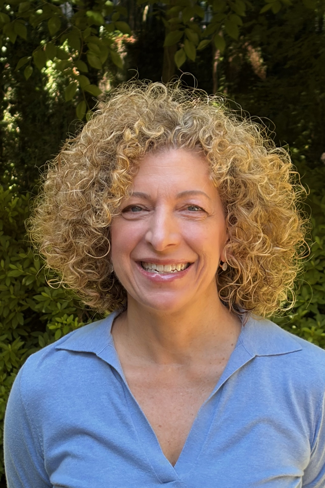
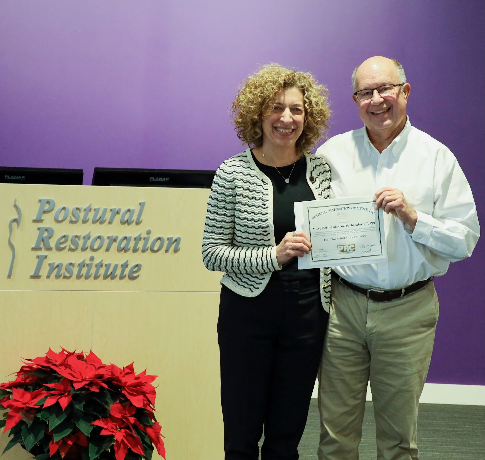

Mary Beth Antolini Verlander, MPT, PRC
A boutique physical therapy practice in Atlanta, built on thirty years of clinical experience and continuous training in manual therapy, postural restoration, and neuromuscular reeducation.

From neurosurgery to physical therapy.
Mary Beth began her career in medicine as a nurse, graduating with honors from Georgetown University in Washington, D.C. She worked in the Neurosurgery Stepdown Unit at Georgetown University Hospital for over a year before pursuing a Master's degree in Physical Therapy at Emory University. During and after her PT training, she continued to work as a registered nurse for five years — a dual foundation that still shapes how she assesses patients today.
Shortly after graduating from Emory, she became the Clinical Director for Physiotherapy Associates at the Howell Industrial Clinic. From there she moved to New York City and started her own practice in midtown Manhattan, treating patients who arrived after conventional care had stalled.
Today, Advanced Integrative Physical Therapy continues that work in Atlanta — a boutique practice for patients seeking treatment that addresses the cause of dysfunction, not only the site of pain.
It started as a patient.
Mary Beth's passion for physical therapy came from firsthand experience as a patient. In her own quest to find successful treatment, she pursued — and continues to pursue — extensive continuing education to fine-tune her manual and neuromuscular reeducation skills.
That experience continues to shape her approach. She knows what it feels like to arrive at appointment after appointment and leave with the same symptoms, the same vague explanations, and the same uncertainty about whether the work will ever land. Her practice is structured around the opposite experience: deeper evaluation, less frequent visits, more lasting change.
Three decades of continuous study.

Georgetown University
B.S. in Nursing, graduated with honors. Neurosurgery Stepdown Unit at Georgetown University Hospital.
Emory University
Master's of Physical Therapy (MPT). Continued registered nursing practice for five years through and after PT training.
Barral Institute
Extensive training in visceral and neural manipulation — the body of work pioneered by French osteopath Jean-Pierre Barral.
Michigan State University
Advanced manual therapy training through MSU's College of Osteopathic Medicine.
PRC Certified
Postural Restoration Certified™ practitioner. The PRC credential is held by a small number of clinicians who have demonstrated advanced understanding of postural and respiratory mechanics.
Further Certifications
Neubie Level 1 · Pilates · Red Cord · Trigger Point Dry Needling · Blood Flow Restriction Training.
Patients rarely come in with the problem they think they have. Listening to what the body is actually telling you — not just where it hurts — is most of the work.
An integrated approach, individually applied.
Mary Beth's practice is built on the principle that the body is interconnected — and that treatment which respects those connections produces faster, more lasting results than care that addresses symptoms in isolation.
Manual Therapy
Advanced techniques from the Barral Institute trace dysfunction back to its source — often somewhere distant from where the patient feels pain. Visceral and neural manipulation address fascia, connective tissue, and organ mobility that conventional musculoskeletal PT does not.
Postural Restoration
The PRI framework treats posture, breathing, and movement as a single integrated system. Asymmetric patterns we develop over years are systematically addressed, restoring the body's natural alternation between sides.
Neuromuscular Reeducation
Tools like the Neubie device and Blood Flow Restriction training accelerate strength gains and tissue recovery by working directly with the nervous system — not just the muscles.
Integrated Outcomes
Because the approach addresses multiple body systems at once, patients often experience improvement beyond their presenting complaint — digestion, breathing, sleep, energy. The body responds as a system, not a collection of parts.
Start with a conversation.
New patients begin with a thorough evaluation. Mary Beth will assess how your body is moving, where dysfunction is originating, and whether her approach is the right fit.